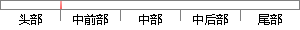

回收问卷的时候不仅会消耗大量的人力，还会存在着问卷回收率低、问卷调查数据统计困难、不能高效而正确地分析、提炼问卷调查结果等问题。
片段位置图

相似结果|
相似片段 1：调查，不仅需要花费不少的费用印刷问卷，而且发放问卷，回收问卷，统计问卷等工作消耗大量时间和精力。另外，此种方式下问卷回收率低，不能高效而正确地分析、提炼问卷调查结果。[1]因此，传统的问卷调查已经不能
|
※ 片段修改建议 ※
近似词参考：- 回收：收受接管 接纳
- 时候：时辰 时刻 时间
- 不仅：不但
- 消耗：耗损 损耗 消费 斲丧
- 困难：坚苦 艰巨 难题
- 不能：不克不及
- 分析：阐发 阐明 剖析
- 问题：题目
系统自动生成语句：收受接管问卷的时辰不但会耗损大量的人力，还会存在着问卷收受接管率低、问卷调查数据统计坚苦、不克不及高效而正确地阐发、提炼问卷调查结果等题目。
注：本片段修改建议为系统自动生成，仅供参考。